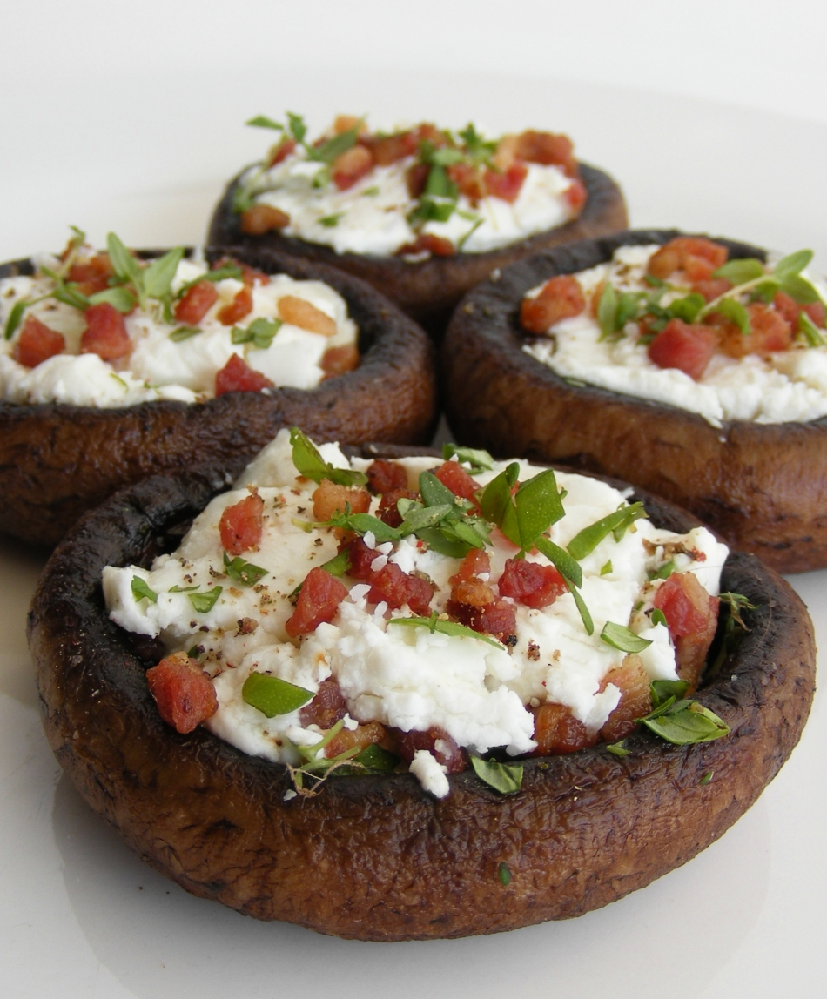

Here is a blurb about a recent trip I went on:
In the summer of 2023, I traveled to Phoenix, Arizona for the USA Fencing National Championships. I was able to stay at a friend's house for the week I was there, but things quickly took a turn for the worse. The heat was infernal, many of my teammates ended up sick or injured, and my results were some of the worst of my entire career. As a consolation prize, my friend and I went to Flagstaff afterward to do some hiking and stargazing in a less hellish climate before I flew back home.
Here is a blurb with a link about my favorite restaurant:
Recently, my favorite restaurant has been Mario's in East Boston. It's a five minute walk from the Blue Line stop near the airport, making it a great place to take friends coming from out of town. And their tiramisu remains the best I have ever eaten on this side of the Atlantic.
Here is a blurb with an image about my favorite food:

I find stuffed mushrooms to be a fantastic appetizer or hors d'oerve, and a gluten-free if slightly more work-intensive alternative to something like a bruschetta. They are also very versatile depending on what you choose to fill them with. One of my favorite fillings includes diced and sautéd onions, with pine nuts, crumbled bacon, Swiss cheese, and a dash of lemon juice. For a more Mediterranean profile, I like feta or goat cheese, sun dried tomatoes, basil, and balsamic glaze. After Thanksgiving, mushrooms are ideal vehicles for leftover turkey stuffing. In any case, I like to dice and sauté the mushroom stalks as part of the filling so as to not be wasteful.